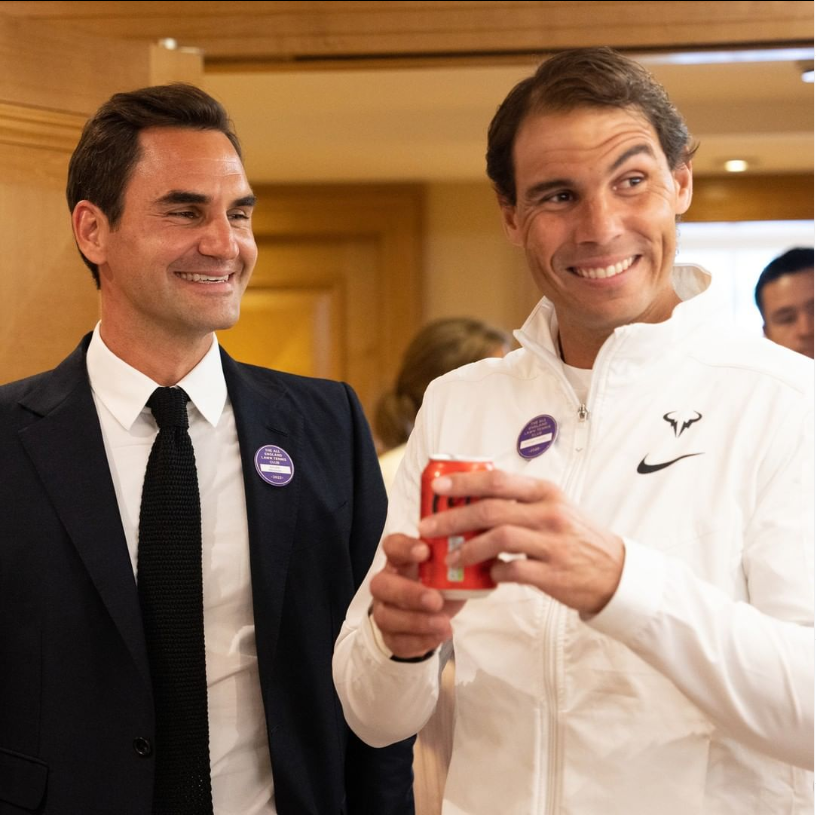
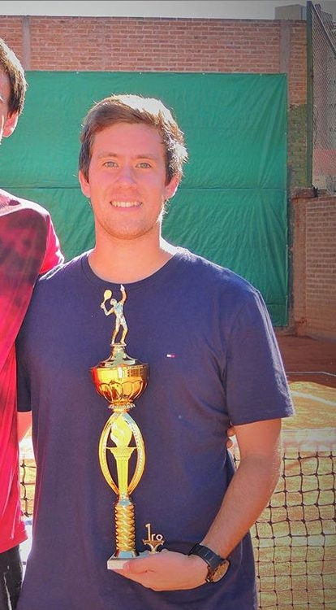

First and foremost, tennis changed my life. It was the beginning of my young and then adult life. It changed my body, it changed my mindset, it gave me confidence, it made me realize that life has its ups and downs, that there are opportunities to take that should be taken and when to back down when I had to.
Regarding everything that I do in my life I try to bring meaning to it, and it has it on its own. My family and friends also came from a Tennis background and it made me who I am today. It also gave me a sense of discipline when I had to go out and train at 8 in the morning in winter, and it showed me important lessons when it came to winning and losing.
I wouldn't be who I am today if I had not played tennis before and because of that I decided to study even further to become a tennis coach.
I got my PTR level 1 degree in 2013, I had finished school a year ago and at 19 years old I wanted to prepare a little bit further and have the set of tools that coaches have. I was also very interested in teaching other young tennis players what this beautiful sport has to offer. The upbringing of all of us in tennis is something of the utmost importance and one bad coach can make the whole difference in keep playing this sport or leaving it forever.
I prepared for the PTR level 2 in 2020 after working in two tennis clubs and getting enough experience to finally get the coaching degree but I couldn't take the final exam because of covid. Here in Argentina almost every activity was shut down and that included education and certifications as well. In my journey preparing the final exam either way (since we had no idea if regular activities would take place again) I learned a lot about preparing students for local tournaments or even traveling abroad and scheduling their calendar to play international events. We also had to learn about preparing the lessons coaches give as marketing campaigns and learning how to sell the classes you give.
I was no stranger to preparing tournaments since I prepared my own with my coach at the time and also I am pretty able to prepare tennis lessons and the whole environment to sell it and make a marketing campaign since I studied economy in 2015. Sadly I could not take the final exam but I think my past experiences speak for themselves and as soon as I get the chance to take it in the future I will complete that last step in my certifications.
Throughout my tennis career, my main experiences were first of all playing in ITF tournaments and in the ATP tour. I played a total of 13 qualifying futures circuit tournaments and one main draw in Cordoba Athletic in 2012. By that time I already knew how to handle Continental, Eastern and Western grips, and when was the right time to use it. Mainly I have an Eastern grip and of course I serve and volley with Continental grip. I also use different variants when I have to play different shots and in the PTR certifications I learned when was the right time to play every grip and when was the right time to teach every student to use them as well.
I also learned how to prepare tournaments and circuits mainly in my country (Argentina) targeting low level tournaments with high point spread to get into bigger ones in Buenos Aires. There was a lot of budgeting to make and a lot of arrangements to travel in time regarding getting early to the venue to get used to different climates and surfaces in Argentina.
In 2014 I gave tennis lessons mainly for kids as my starting point in Cordoba Athletic Club. It was a 3 month preparation. It was mainly focused on ball play and on the maneuvering of rackets in little kids from 5yo to 10yo. The latest already started playing and there could be several drills to teach them when they got the hang of it and wanted to use the racket.
When it comes to job experiences I gave 6 months of tennis lessons in Jockey Club Cordoba in the year 2016 to development and juniors tennis players. I still didn't give classes to adults just yet, but that will come later on
Finally in 2021 with more experience I joined BerettaTennis in Country Siete Soles. A private neighborhood with clay and hard courts in which they gave tennis lessons to everyone living there. We built a good academy with Santiago and I gave lessons to adults and competition tennis players. I liked that area more and I managed some of my own students by that time. I prepared some of them for local tournaments and they even got to win some rounds! They enjoyed the whole preparation for that final competition in which they tested everything they had learned. It was joyous to see how happy they were winning some matches with all that hard work that they put into their lessons and their day to day in tennis.